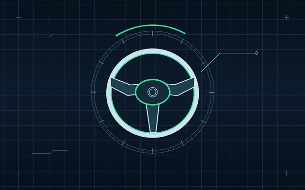

Master’s Student · Beihang University
Jiacheng Liu 刘嘉成
人和智能系统如何共同感知、分配任务，并作出可靠的决策？
- RESS 2026
- IEEE T-ITS 2026
- ACM 2024
- ICRMS 2023
01At a glance
我研究人和智能系统如何共同感知、分配任务，并作出可靠的决策。
- 3Projects本科阶段科研实践
- 5Publications期刊与会议论文
- 3Research interests人智协同、类人智能体、人因可靠性
- 人智协同人和自动化系统如何分配任务？我关注人在环决策、人机信任，以及控制权何时应当切换。
- 类人智能体面向协作任务，我关注如何建立智能体模型，以及如何评估它的行为与人的认知和行为是否一致。
- 人因可靠性复杂系统中的人何时容易出错？我关注情境因素如何影响人的表现，以及如何将这些影响纳入风险评估。
02Projects
Featured Projects
智能驾驶监控、航空供氧与脑电交互风险预警。
All projects
2023.04 — 2024.04
Driving Safety Monitoring
智能驾驶人机安全综合监控系统
我负责项目整体规划和软硬件架构设计，并参与实验设计、数据分析与软硬件开发。
Open project
2023.04 — 2023.12
Aviation Oxygen & Protection
人机协同的航空供氧与低压防护技术
负责信号采集和数据分析，参与实验平台搭建。
Open project
2022.04 — 2023.04
EEG & Interaction Risk
基于脑电信号的 AI 交互风险预警系统
负责相关文献检索，协助团队开展实验。
Open projectIndex
All projects →
- Driving Safety Monitoring
- Aviation Oxygen & Protection
- EEG & Interaction Risk
03Publications
Selected Publications
All publications-
RESS 2026
A Semi-Markov Process-Based Approach to Modeling Situation Awareness Reliability in Continuous Supervisory Tasks
Reliability Engineering & System Safety
-
IEEE T-ITS 2026
Modeling Psychological and Behavioral Trust Dynamics in Human-ADS Interaction: A Cognitive Process Perspective
IEEE Transactions on Intelligent Transportation Systems
-
RESS 2026
-
ACM 2024
Intelligent Driving Safety Monitoring Based on Machine Learning ——An Example of Students Research Training Program in the Context of New Engineering Disciplines
3rd International Conference on Computer, Artificial Intelligence and Control Engineering
-
ICRMS 2023
Trust State Monitoring of Human-Machine Co-Driving Based on EEG Signals in Intelligent Driving Scenarios
14th International Conference on Reliability, Maintainability and Safety
04News
News & Updates
- 2026
A Semi-Markov Process-Based Approach to Modeling Situation Awareness Reliability in Continuous Supervisory Tasks · Reliability Engineering & System Safety
- 2026
Modeling Psychological and Behavioral Trust Dynamics in Human-ADS Interaction: A Cognitive Process Perspective · IEEE Transactions on Intelligent Transportation Systems
- 2026
05About
About Me

我是刘嘉成（Jiacheng Liu），北京航空航天大学控制科学与工程专业硕士生，本科就读于北航飞行器质量与可靠性专业。
我关注人和智能系统如何共同感知、分配任务，并作出可靠的决策。欢迎通过 LiuJiacheng25@buaa.edu.cn 与我交流。
- 2025 — 至今
北京航空航天大学 · 控制科学与工程 · 硕士在读
- 2021 — 2025
北京航空航天大学 · 飞行器质量与可靠性 · 工学学士